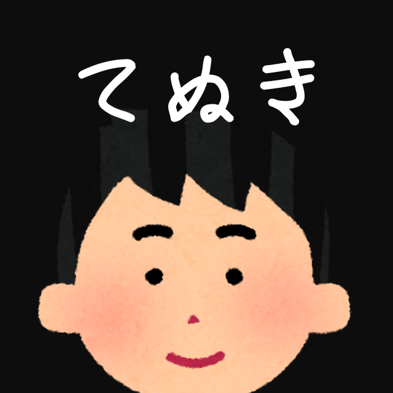
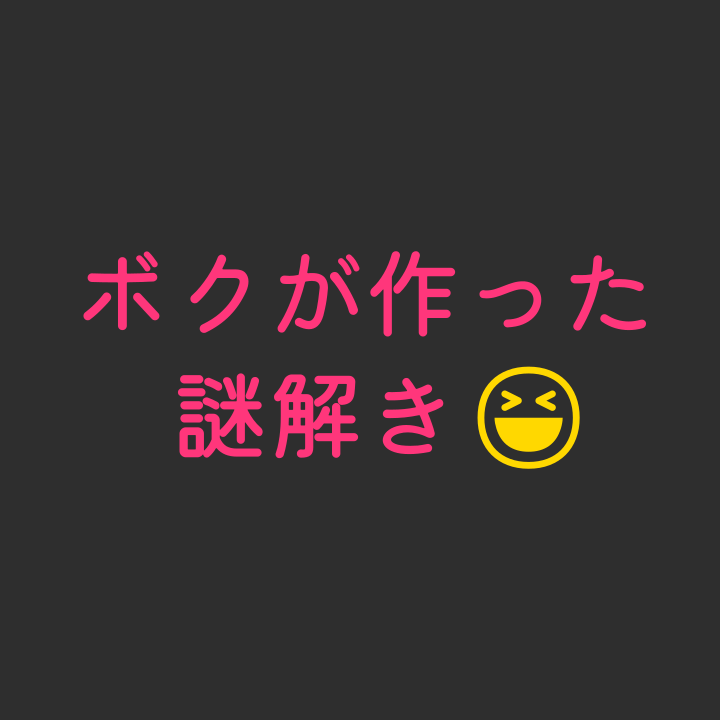

🪐🪦🔥🐑💊💎🥦🦶🛡️⭐
💅🥝🏳️🦍📎🫠✒️🥾🌱🫦🏀
🥑📍👣🌊🐈⬛💦🤸🕯️🍬🦠☘️
📐💥🌟🌳🫧🫀⚠️☁️✨💂🤍
🌿🫁🧻🎬🏃🍷🧚🪵🦷🦔🦵🐠
✍️🍅🧠💁⚾🐾💀🍋🚶🚣🦴🌷🪨💧

water
LINE謎『water』です。自分が好きなデザインを詰め込みました。（Twitter: #water謎）
最善手
LINE謎『最善手』です。無機質な雰囲気が好きな方におすすめです。（Twitter: #最善手謎）

てぬき
らいんなぞ『てぬき』です。しょしんしゃのかたにおすすめです。じしんのあるひとはぜひ「かんぜんにくりあ」をめざしてください。（ついったー: #てぬきなぞ）

ボクが作った謎解き😆
LINE謎『ボクが作った謎解き😆』ダヨ❕❕😍ネットミームが、好きナ人は、より、楽しめる✨🎶、と思うヨ🥰🥰💓（Twitter: #ボクが作った謎解き😆）